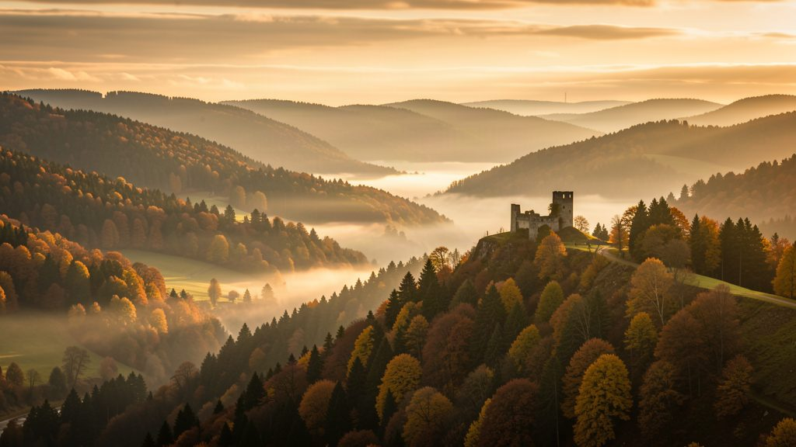
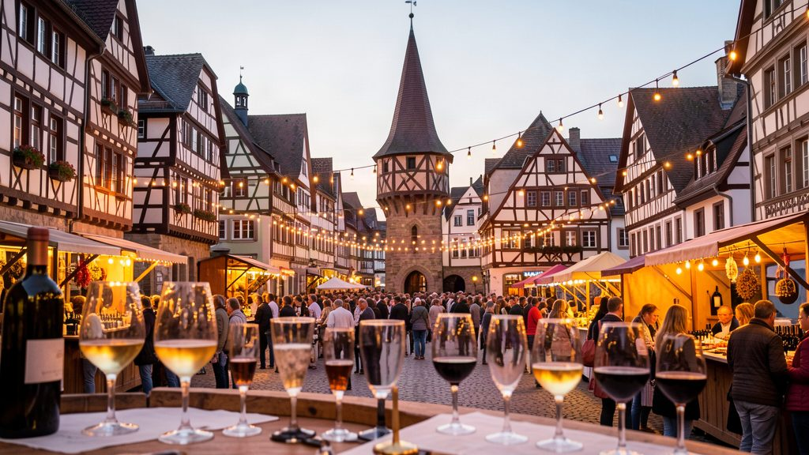
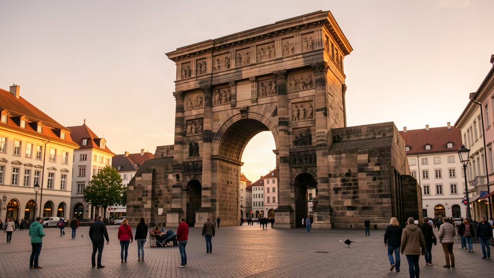
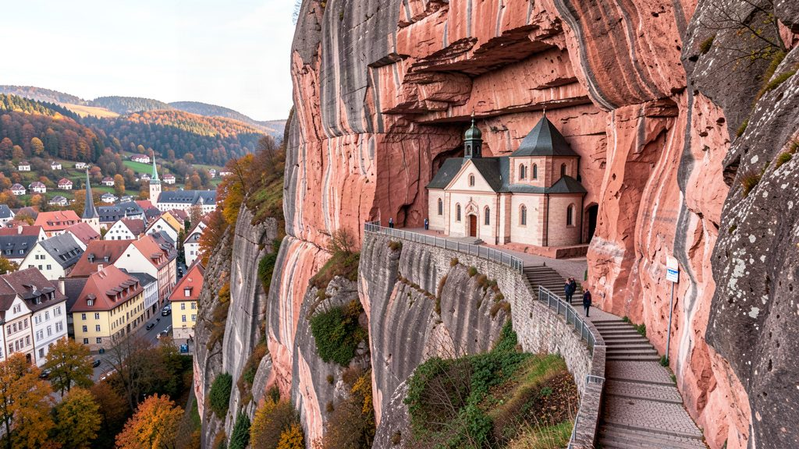
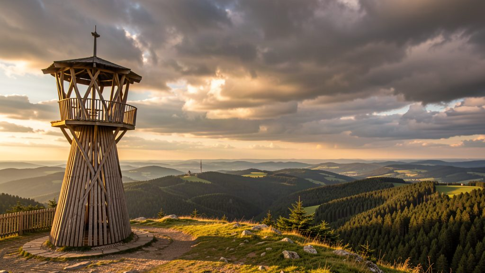
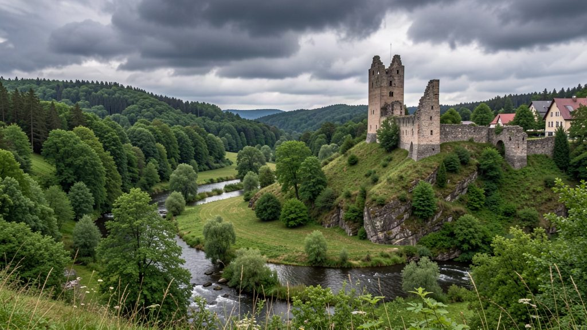

Hunsrück & de Moezel
4 dagen wandelen, wijn proeven, kastelen en herinneringen vastleggen — met uitvalsbasis Dhronecken.




Van de ruige, stille bossen van de Hunsrück naar de monumentale Romeinse pracht van Trier en de wijntradities van de Moezel. Alles op korte rijafstand van je verblijf in Falkennest, Dhronecken.
Tap op een locatie-chip om de plattegrond met parkeerplaatsen direct te openen.

Aankomst & Wijnfeest
Burg Dhronecken · Hölzbachklamm · Bernkastel-Kues
Verken de 13e-eeuwse burchtruïne van de Wildgrafen. Gebruik de ARGO-app voor de 360°-herbouw en beklim de toren. Direct erachter start de kloofwandeling.
Hunsrück-specialiteiten: vers geplukte paddenstoelen of een broodplank met lokale ham.
Slotavond van het beroemde feest met vuurwerk op de Moezel en livemuziek.
- Flammkuchen — krokant, heet uit de oven
- Wildzwijn-specialiteiten — gegrild
- Riesling — van steile Moezelhellingen
Romeins Trier
De oudste stad van Duitsland
Koffie bij Coffee Fellows (ca. 1200). De voordeur zit op de 2e verdieping tegen middeleeuwse indringers.
Het mooiste plein met de Petrusbrunnen. Bezoek daarna de Dom en raak de historische Domstein aan.
Toegangsprijzen:
| Activiteit | Toegang |
|---|---|
| Oudste wijnkelder (2000 jr) | €16 rondleiding |
| Porta Nigra & Kaiserthermen | ca. €4 p.p. |
| Panoramavaart Moezel | ca. €12–15 |
Verfijnd dineren nabij de Hauptmarkt. Tip: ontbijt in Boutiquehotel Kloster Pfalzel.
Edelstenen & Vakwerk
Idar-Oberstein · Herrstein
Spectaculair uitzicht op de kerk in de rotswand (1482). Beklim de 234 treden naar het altaar.
Bezoek de edelsteenmijn en maak een tijdreis door het vakwerkstadje Herrstein met koffie en gebak.
Wildgerechten uit de regio. Vooraf reserveren aanbevolen.
Toppen & Hangbrug
Erbeskopf · Geierlay
Hoogste top van Rijnland-Pfalts met de Windklang-sculptuur en interactieve bosexpositie.
Panoramische lunch bij het vrijetijdscentrum + adrenaline op de 1.345 m rodelbaan.
360 m lang, 100 m boven het dal. Tip: wandel de Geierlayschleife (6 km) ónder de brug door.
Afsluitend diner tussen Hunsrück en Moezel.
Blauwe P = parkeerplaats. Rode pin = bezienswaardigheid. Navigeer direct via Google Maps.
Burg Dhronecken
Navigeer met de Komoot-app. Sla de routes vooraf offline op voor vertrek.
Hölzbachklamm
Kloofwandeling direct achter Burg Dhronecken langs kabbelende beekjes en rotsformaties.
📷 Fototip: statief mee voor long-exposure van stromend water.
Komoot — Hölzbachklamm ↗Traumschleife 'Gipfelrauschen'
Panoramawandeling over de hoogste berg van Rijnland-Pfalts met spectaculaire vergezichten.
📷 Fototip: panorama vanaf Windklang bij zonsondergang.
Komoot — Erbeskopf ↗Geierlayschleife (loop)
Rondwandeling die onder de 100 m hoge hangbrug door voert voor de mooiste perspectieven.
Komoot — Geierlay route ↗Extra wandelopties
Hunolstein — kasteelruïne met panoramisch dalzicht.
Komoot — Hunolstein ↗Züscher Hammer — historische ijzersmelterij met groot waterrad.
Komoot — Züscher Hammer ↗Leg je vakantieverhalen en foto's direct vast. Alles wordt veilig lokaal opgeslagen op je apparaat.
Vink af wat je inpakt — de app onthoudt je voortgang automatisch.
📄 Documenten & geld
👕 Kleding & schoeisel
🥾 Wandel & Outdoor
📷 Foto & elektronica
📱 Apps & Digitaal
| Bestemming | Afstand | Reistijd auto |
|---|---|---|
| Erbeskopf | ±8 km | 10 min |
| Bernkastel-Kues | ±25 km | 25 min |
| Trier (centrum) | 34 km | 35 min |
| Herrstein | ±30 km | 30 min |
| Idar-Oberstein | ±35 km | 35 min |
| Geierlay (Mörsdorf) | ±55 km | 50 min |